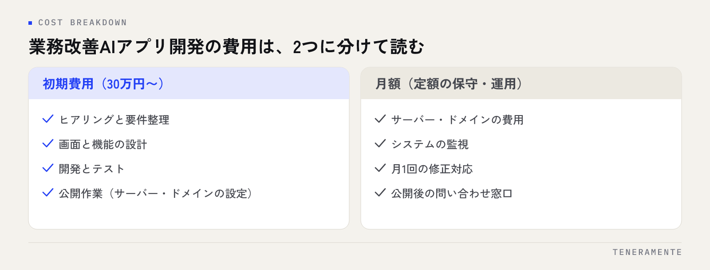

業務改善AIアプリの開発費用と期間は、「初期費用に何が含まれ、何が月額なのか」「ミーティングを何回で終えるか」の2点を押さえると、見積もりの比較がぶれなくなります。金額の大小より先に、内訳の区切り方をそろえることが、判断をぶらさない近道です。この記事では、費用の内訳、期間の目安の考え方、費用を左右する要因、見積もりの読み方を順に整理します。
📌 この記事の結論
業務改善AIアプリの費用は「初期費用に何が含まれ、何が月額か」で読み、期間は「決める速さ」で決まります。初期費用に設計・テスト・公開作業まで入るか、月額に何が入るかを揃えてから比べるのが、判断をぶらさない読み方です。
01費用は「初期費用」と「月額」に分けて読む
開発費用が分かりにくい最大の理由は、初期に払うものと毎月払うものが見積書の中で混ざっていることです。まず2つに分けて読みます。

| 費目 | 含まれるもの | 支払い |
|---|---|---|
| 初期費用 | 要件整理・設計・実装・テスト・公開作業 | 一度 |
| 月額費用 | サーバー・ドメイン費用、システム監視、月1回の修正対応 | 毎月定額 |
一例として、初期費用30万円〜からフェーズを区切り、月額は定額でサーバー・ドメイン費用、システム監視、月1回の修正対応までを含める、という区切り方があります。「作った後にいくらかかるか」を最初に固定するのが、初期費用の安さより大切なポイントです。公開後に「サーバー代は別」「修正は都度見積もり」と後から積み上がる構成だと、総額は初期費用だけでは判断できません。
02期間の目安：3回のミーティングで完成まで
期間を左右するのは、開発の手の速さより「決める速さ」です。ミーティングを、要件整理→仕様確認→最終確認の3回に区切る進め方を例に、何が期間を決めるのかを見てみます。
- 要件整理：いまの業務と困りごとを聞き、作る範囲と作らない範囲を決めます
- 仕様確認：画面と流れを実際に触れる形で確認し、ズレを直します
- 最終確認：テスト済みのアプリを一緒に確認し、公開します
小さなPoC（Proof of Concept：試作）であれば、数週間という単位で「触れる形」に届くこともあります。見積もりを取るときは「最初に触れるものが出るのはいつか」を必ず聞いてください。その先の本開発の期間は、次の節で挙げる5つの要因（画面数・外部連携・権限・データ移行・AI精度）でほぼ決まります。それでも、ミーティングの回数を固定しておくと、期間が延びる原因が「決まらないこと」だと見えるようになります。社内で決裁できる人がミーティングに同席できるかどうかが、実は期間に最も効く要素です。
03費用を左右する5つの要因
同じ「業務改善アプリ」でも、次の5点で費用は大きく変わります。見積もりを依頼する前に、自社の要件がどこに当たるか確認してください。
- 画面と帳票の数：一覧・登録・詳細の基本画面に、PDF帳票やCSV出力が加わるほど増える
- 外部連携：LINE、メール、会計ソフト、カレンダーなどとの接続は、連携先ごとに設計が必要
- ログインと権限：誰が何を見られるかの制御。複数店舗や部門で分けるほど複雑になる
- 既存データの移行：Excelや旧システムからの取り込み。表記ゆれの整理に手間がかかる
- AI処理の精度要件：「下書きで十分」か「そのまま送信できる精度」かで、検証の工数が変わる
このうち、最初の版に本当に必要なものだけを残すと、初期費用は自然に下がります。「あったら便利」は運用後の月1回の修正枠で足す方が、結果的に安く、しかも使われる機能になります。
04見積もりの読み方：確認すべき7項目
見積書を受け取ったら、金額の前に次の7項目を確認してください。
- 初期費用に含まれる範囲（設計・テスト・公開作業まで入っているか）
- 月額に含まれるもの（サーバー・ドメイン・監視・修正のどこまでか）
- 修正対応の回数と範囲（月に何回、どの程度の変更まで）
- データとソースコードの扱い（解約時にデータを持ち出せるか）
- 仕様変更が起きたときの扱い（追加費用の基準）
- ミーティングの回数と、誰が同席するか
- 公開後の障害対応（誰が、どの時間帯に対応するか）
安い見積もりの見方
初期費用だけが際立って安い場合は、月額や修正費用の欄を必ず確認します。安さ自体は問題ではなく、「どこで回収する構成か」が読めない見積もりが問題です。
規模別の相場感や、費用を抑えるコツについては業務Webアプリ開発の費用相場で詳しく解説しています。
05小さく始める進め方：PoCから本番へ
費用と期間の両方を抑える最も確実な方法は、最初の版を小さくすることです。順番としては次のように進めます。
- 毎日さわる・転記が多い・属人化している業務を1つ選ぶ
- その業務の「一覧が見える」「入力が楽になる」だけの試作を作る
- 現場が使ってみて、足りない機能を月1回の修正枠で足す
- 効果が出た業務から、隣の業務へ広げる
PoCの段階では、見た目の作り込みや細かな権限設定は後回しで構いません。最初から全部門の要望を盛り込むと、初期費用も期間も膨らみ、公開が遠のくほど現場の熱は冷めます。小さく出して、使いながら直す方が、結果として総額も期間も小さく収まります。
06AI支援開発で費用と期間はどう変わったか
設計・実装・テストの工程に Claude Code（Anthropic社のAIコーディング支援ツール）を組み込む進め方があります。ここで変わるのは、単にコードを書く速さではありません。要件を聞いたその場で画面の試作を作り、見てもらい、直す。この往復をミーティングの中で回せるようになったことで、「仕様書を読んで想像する」工程が減り、認識のズレによる手戻りが起きにくくなりました。
技術構成は、Next.js と PostgreSQL のように広く使われている組み合わせかを確認しておくと、あとで別の会社へ引き継ぐ選択肢が残ります。要件整理から運用までを同じチームが担うのかも、手戻りの多さに直結する確認点です。業務改善アプリ開発の全体像や開発会社の選び方は、AI業務改善アプリ開発 完全ガイドにまとめています。
発注側にとっても、仕様書を作り込む時間より、早い段階で試作を触って感想を返す時間のほうが価値を持つようになりました。詳しくはClaude Codeでのアプリ開発は何が違う？｜進め方・品質・費用で解説しています。
07よくある質問
初期費用30万円には何が含まれますか？
期間はどれくらいかかりますか？
公開後に機能を足したくなったらどうなりますか？
08まとめ：業務改善AIアプリ開発は、内訳を読んで小さく始める
業務改善AIアプリの費用は「初期費用30万円〜」という数字だけでなく、初期と月額の内訳、費用を動かす5つの要因、見積もりの7項目で判断してください。期間は、ミーティングを3回に絞り、決める人が同席することで短くなります。複数の見積もりを比べるときは、金額の欄をいったん隠して内訳だけを読んでみると、違いがはっきり見えます。
TENERAMENTEは名古屋のAI開発企業として、AI×WEBアプリ開発を初期費用30万円〜、要件整理・仕様確認・最終確認の3回のミーティングで進め、公開後はサーバー・ドメイン費用・システム監視・月1回の修正対応を含む月額定額の保守に移ります。「この業務をアプリにすると、いくらで、いつまでにできるのか」を概算で知りたい段階からで構いません。お問い合わせからご相談ください。